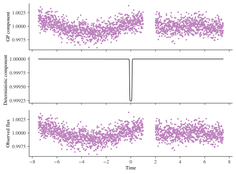
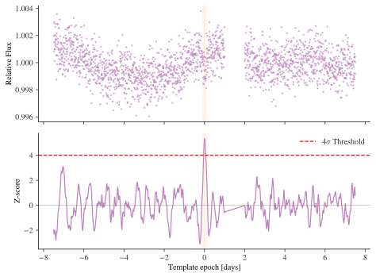
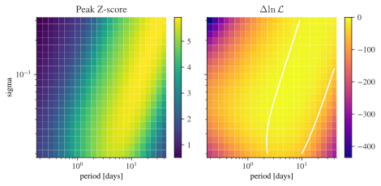

import numpy as np
import matplotlib.pyplot as plt
import time as python_time
from transieve import SimulatedLightCurve
from transieve.gp import (
SHOGPFamily,
evaluate_frequentist_detection,
scan_gp_stability_map,
TransitVettingPolicy,
)
from transieve.transit import get_monotransit_from_epoch
import plotting as plmRetrievability Demo on a Synthetic Light Curve
This notebook demonstrates the retrievability APIs and how the matched-filter Z-score behaves under different noise model assumptions:
evaluate_frequentist_detection: fit a GP to the data and compute the matched-filter Z-score profile.scan_gp_stability_map: map the Z-score and marginal likelihood across different GP hyperparameters.
The Z-score evaluated at the Maximum Likelihood Estimate (MLE) of the GP hyperparameters typically provides the most reliable detection metric.
Build a synthetic light curve
We generate a light curve with an injected monotransit and correlated stellar noise (modelled as a Simple Harmonic Oscillator GP).
planet_params = {
"depth": (3 / (1 * 109)) ** 2,
"epoch": 0.0,
"duration": 0.2,
"period": 100.0,
}
gp_params = {
"log_omega": np.log(2 * np.pi / 4),
"log_sigma": np.log(5e-4),
"log_quality": np.log(1 / np.sqrt(2)),
"log_jitter": np.log(1e-3),
}
lc = SimulatedLightCurve.from_transit(
**planet_params,
gp_params=gp_params,
baseline=15,
seed=0,
multiply_signal=False,
gap_windows=[[1, 2]],
)
time, flux = lc.time, lc.flux
true_signal = lc.deterministic_component_, axes = plm.subplots(3, 1, sharex=True, rescale_height=0.4)
_ = lc.plot(axes)
Baseline retrievability with fitted GP
We fit an SHO GP to the light curve (finding the MLE hyperparameters) and evaluate the matched filter over a bank of transit epochs. This provides our primary detection metric: the Z-score timeline.
gp_family = SHOGPFamily(jitter_range=(1e-6, 1e-2))
template_generator = get_monotransit_from_epoch(
time,
depth=planet_params["depth"],
duration=planet_params["duration"],
period=planet_params["period"],
mean=0.0,
)
# We use Scipy's global differential_evolution optimizer (transieve's default)
# to find the global MLE parameters without needing to seed it with the true parameters.
retr = evaluate_frequentist_detection(
time=time,
flux=flux,
template_bank=template_generator,
gp_family=gp_family,
fit_mean=1.0,
fit_method="differential_evolution",
fit_max_retries=1,
threshold=4,
)
peak_idx, peak_z = retr.strongest_match()
peak_time = retr.time[peak_idx]
print(f"Peak Z-score: {peak_z:.3f} at t = {peak_time:.3f} d")
print("Recovered GP parameters:", retr.gp_physical_params)Peak Z-score: 5.355 at t = 0.003 d
Recovered GP parameters: {'period': np.float64(4.843370086714427), 'sigma': np.float64(0.0007235818446203121), 'quality': np.float64(0.5000040923318889), 'jitter': np.float64(0.0009794266263686814)}fig, axes = plm.subplots(2, 1, sharex=True, rescale_height=0.6)
# Plot flux with highlighted transit
axes[0].plot(time, flux, marker=".", ls="", color="C0", alpha=0.5, ms=3, label="Flux")
axes[0].axvline(peak_time, color="C3", ls=":", alpha=0.8)
axes[0].axvspan(
peak_time - planet_params["duration"] / 2,
peak_time + planet_params["duration"] / 2,
color="C3",
alpha=0.1,
)
axes[0].set_ylabel("Relative Flux")
# Plot Z-score timeline
axes[1].plot(retr.time, retr.z_score, color="C0", lw=1.2)
axes[1].axvline(peak_time, color="C3", ls=":", alpha=0.8)
axes[1].axvspan(
peak_time - planet_params["duration"] / 2,
peak_time + planet_params["duration"] / 2,
color="C3",
alpha=0.1,
)
axes[1].set_ylabel("Z-score")
axes[1].axhline(0, color="gray", ls="-", alpha=0.5, lw=0.8)
axes[1].axhline(4, color="red", lw=1.2, ls="--", label=r"4$\sigma$ Threshold")
axes[1].set_xlabel("Template epoch [days]")
axes[1].legend(loc="upper right")
plt.tight_layout()
GP misspecification and the stability landscape
What happens if we fix the noise model to the wrong hyperparameters? We scan the GP sigma and period (timescale) to see how they impact detection likelihood and Z-score.
- Too flexible (e.g. short period): The GP might overfit and absorb the transit itself.
- Too rigid (e.g. long period): The GP underfits stellar variability, inflating the noise floor.
sigma_grid = np.geomspace(2e-4, 3e-3, 20)
period_grid = np.geomspace(0.2, 40.0, 24)
template_fixed = true_signal - 1.0
tic = python_time.time()
# For the stability grid scan, we use fast local L-BFGS-B optimization
# at each grid point to optimize the remaining parameters.
stab = scan_gp_stability_map(
time=time,
flux=flux,
template=template_fixed,
gp_family=gp_family,
sigma_grid=sigma_grid,
timescale_grid=period_grid,
fit_mean=1.0,
fit_method="L-BFGS-B",
fit_max_retries=1,
)
toc = python_time.time()
print(f"Stability map computed in {toc - tic:.1f} seconds")Stability map computed in 0.3 secondsX, Y = np.meshgrid(stab.timescale_grid, stab.sigma_grid)
# Set rescale_height=1.6 so that subplots are approximately square
fig, axes = plm.subplots(1, 2, sharex=True, sharey=True, rescale_height=1.5)
im0 = axes[0].pcolormesh(X, Y, stab.z_score, shading="auto", cmap="viridis")
axes[0].set_title("Peak Z-score")
fig.colorbar(im0, ax=axes[0])
log_L = stab.log_marginal_likelihood
# Show delta log likelihood relative to max
im1 = axes[1].pcolormesh(X, Y, log_L - np.nanmax(log_L), shading="auto", cmap="plasma")
# Draw smooth contour at continuous Z=5
axes[1].contour(X, Y, stab.z_score, levels=[5.0], colors="white", linewidths=1.5)
axes[1].set_title(r"$\Delta \ln \mathcal{L}$")
fig.colorbar(im1, ax=axes[1])
for ax in axes:
ax.set_xscale("log")
ax.set_yscale("log")
ax.set_xlabel(f"{stab.timescale_name} [days]")
axes[0].set_ylabel("sigma")
plt.tight_layout()
Reading the stability map
- Log-marginal likelihood — how well each combination explains the data without the transit template.
- Peak Z-score — where the matched-filter response is strongest.
The highest likelihood region does not always yield the highest Z-score. An excessively flexible GP achieves high likelihood by fitting the transit as noise, destructively suppressing the Z-score.
Vetting Policy
We can use TransitVettingPolicy to ensure the detection crosses our significance threshold and hasn’t been absorbed by the GP.
policy = TransitVettingPolicy(z_threshold=4.0, recovery_fraction_cutoff=0.5)
verdict = policy.validate(retr, injected_time=planet_params["epoch"])
print("Passed Vetting:", verdict.passed)
print("Vetting Report:")
for k, v in verdict.report.items():
print(f" {k}: {v}")Passed Vetting: True
Vetting Report:
index: 1079
z: 5.292754157105563
z_threshold: 4.0
recovery: 1.3321784037975721
recovery_fraction_cutoff: 0.5
significance_ok: True
recovery_ok: True